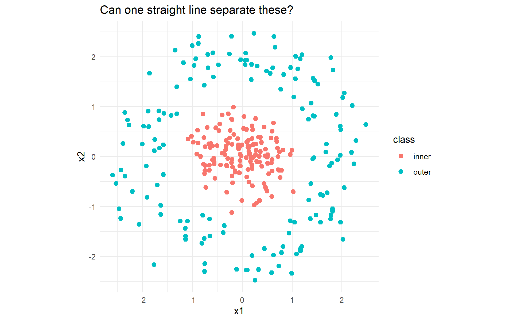
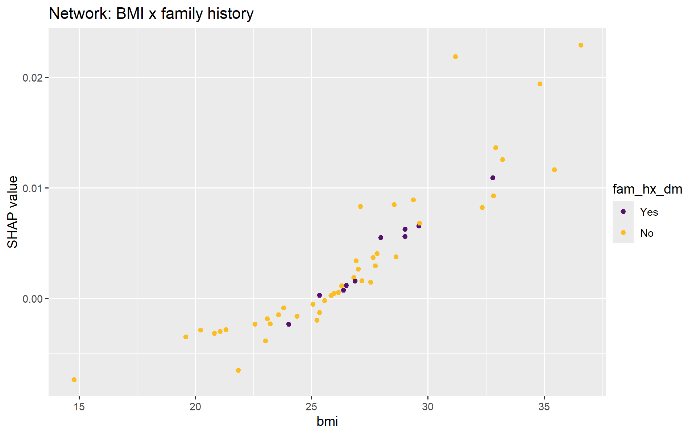

Part A is a reading: the theory of feed-forward neural networks from the logistic regression you already own to backpropagation, worked by hand on a two-neuron network with real numbers. Part B builds that network in 40 lines of base R so nothing is magic. Part C fits, regularises, tunes and explains a network in tidymodels, adds a two-layer torch network, and closes with the verdict across all four families on one test set.
Time: lecture 55 min (Part A) · live coding 35 + 25 min (Parts B–C) · Your turn 25 min.
Part A · Theory primer
A1 · You already own a neural network
Logistic regression computes a weighted sum of the inputs, adds a constant, and squashes the result into (0, 1):
That object — weighted sum → bias → non-linear squash — is a neuron (or unit). \(w\) are its weights, \(b\) its bias, \(\sigma\) its activation function. Everything in deep learning is this unit, wired in different ways and trained by the same procedure.
Its limitation is geometric. The decision \(p \ge 0.5\) is the same as \(z \ge 0\), and \(z = 0\) is a straight line (a hyperplane in \(p\) dimensions). One neuron can only draw one straight boundary.
A2 · Why one neuron is not enough
Two classic problems defeat a straight line: XOR (positive when exactly one of two inputs is on) and the two rings below. No weights \(w_1, w_2, b\) exist that separate them. This is what Minsky and Papert pointed out in 1969, and it shut the field down for fifteen years — until people trained the obvious fix.
The fix: let several neurons each draw their own soft line, then let one more neuron combine those lines.
A3 · The multilayer perceptron (MLP)
Notation for one hidden layer of \(H\) units and one output unit, for a single person with inputs \(\mathbf{x} \in \mathbb{R}^p\):
with \(\mathbf{W}^{(1)}\) a \(p \times H\) matrix, \(\mathbf{b}^{(1)}\) a vector of \(H\) biases, \(\mathbf{W}^{(2)}\) a vector of \(H\) weights, \(b^{(2)}\) one bias. For \(n\) people at once, stack the inputs as rows of an \(n \times p\) matrix \(\mathbf{X}\) and everything becomes matrix multiplication — which is why GPUs matter and why the R code in Part B is five lines.
Parameter count:\(pH + H + H + 1\). For our data (\(p \approx 45\)) and \(H = 30\): \(45 \cdot 30 + 30 + 30 + 1 = 1{,}411\) free parameters, trained on ~3,200 people per fold. Hold that number — it explains Section A9.
“Deep” simply means more than one hidden layer: \(\mathbf{a}^{(2)} = g(\mathbf{W}^{(2)\top}\mathbf{a}^{(1)} + \mathbf{b}^{(2)})\), and so on. Each layer re-describes the previous one’s output; depth lets the network compose simple features into complex ones with far fewer units than one very wide layer would need.
A worked forward pass (keep these numbers; we reuse them for backpropagation)
A tiny network: 2 inputs → 2 tanh hidden units → 1 sigmoid output. One person with \(\mathbf{x} = (1.0,\, 0.5)\) who truly has the outcome (\(y = 1\)).
The network says 60 % for someone who is a case. It should say more. Training is how it learns to.
A4 · Activation functions: the non-linearity is the point
Function
Formula
Derivative
Range
Notes
sigmoid
\(\sigma(z) = 1/(1+e^{-z})\)
\(\sigma(z)(1-\sigma(z))\)
(0, 1)
output unit for binary outcomes; hidden units in nnet; saturates
tanh
\((e^{z}-e^{-z})/(e^{z}+e^{-z})\)
\(1 - \tanh^2(z)\)
(−1, 1)
zero-centred sigmoid; our Part B network
ReLU
\(\max(0, z)\)
\(1\) if \(z>0\) else \(0\)
[0, ∞)
the default for hidden units in deep nets; cheap, no saturation on the positive side
leaky ReLU / ELU / GELU
small negative slope / smooth variants
—
—
fix “dead” ReLUs
softmax
\(e^{z_k}/\sum_j e^{z_j}\)
—
probabilities over \(K\) classes
output unit for multi-class
identity
\(z\)
1
ℝ
output unit for regression
Why it matters: without a non-linear \(g\), stacking layers does nothing — a product of matrices is a matrix, so the whole network collapses to one linear model. The squash is what lets eight neurons make a ring.
Saturation. Where sigmoid and tanh are flat (|z| large), their derivative is ≈ 0, so the gradient that reaches earlier layers is ≈ 0 and they stop learning — the vanishing-gradient problem that made deep sigmoid nets untrainable. ReLU’s derivative is exactly 1 on the positive side, which is most of why 2012 happened.
A5 · The loss: what “wrong” means
For binary classification the loss is binary cross-entropy (log-loss), averaged over the \(n\) training people:
This is exactly the negative log-likelihood that logistic regression maximises — nothing new. It punishes confident wrong answers brutally (\(p = 0.99\) when \(y = 0\) costs 4.6; \(p = 0.6\) costs 0.9), and it is smooth, so it has a gradient everywhere. Accuracy has no gradient (a tiny weight change rarely flips a prediction), which is why nothing is trained on accuracy directly. Regression uses mean squared error; multi-class uses categorical cross-entropy; survival, ordinal and custom problems write their own.
For our worked example: \(L = -\log(0.5973) = 0.5154\).
A6 · Gradient descent: walking downhill
Training = find the weights that minimise \(L\). There is no closed form, so we iterate:
\[
\theta \;\leftarrow\; \theta - \eta \,\frac{\partial L}{\partial \theta}
\qquad\text{for every weight and bias } \theta,
\]
where \(\eta\) is the learning rate. The gradient points uphill; we step the other way. Repeat for many epochs (passes through the data).
Variant
Gradient computed on
Comment
batch gradient descent
all \(n\) rows
exact; slow and memory-heavy for large \(n\) (what Part B and nnet do)
stochastic (SGD)
one row at a time
noisy; the noise helps escape poor regions
mini-batch
32–512 rows
the standard; one epoch = all mini-batches once (brulee, keras, torch)
momentum
running average of past gradients
rolls through flat regions; damps zig-zagging
Adam / AdamW
per-weight adaptive step + momentum
the default optimiser in most deep learning
L-BFGS
quasi-Newton (uses curvature)
excellent for small networks; nnet and brulee’s default
A learning-rate schedule (start higher, decay; or cyclic) often matters more than the choice of optimiser.
A7 · Backpropagation is the chain rule
We need \(\partial L / \partial \theta\) for every weight. Backpropagation computes them all in one backward sweep by applying the chain rule layer by layer, reusing each layer’s result for the layer before it. For one person (drop the \(1/n\)):
Output layer. With sigmoid output and cross-entropy loss, a small miracle: \[
\delta^{(2)} \equiv \frac{\partial L}{\partial z^{(2)}} = p - y .
\]How wrong, with a sign. For our example: \(\delta^{(2)} = 0.5973 - 1 = -0.4027\).
Pass the blame back. How much did each hidden activation contribute to the error? \[
\frac{\partial L}{\partial a^{(1)}_h} = \delta^{(2)}\, W^{(2)}_h
\quad\Rightarrow\quad (-0.4027)(0.7,\ -0.4) = (-0.2819,\ 0.1611).
\]
Through the activation.\(a^{(1)}_h = \tanh(z^{(1)}_h)\), so multiply by \(\tanh'(z) = 1 - a^2\): \[
\delta^{(1)}_h \equiv \frac{\partial L}{\partial z^{(1)}_h} = \frac{\partial L}{\partial a^{(1)}_h}\,(1 - (a^{(1)}_h)^2)
\quad\Rightarrow\quad (-0.2819)(0.6347),\ (0.1611)(0.9610) = (-0.1789,\ 0.1548).
\]
Run the forward pass again with the new weights: \(p = 0.6966\), loss \(0.3615\) (was 0.5154). The network moved toward the right answer for this person. Do that for all \(n\) people (average the gradients), thousands of times, and it has learned. That is all “learning” means here: the numbers in \(\mathbf{W}\) changed.
In matrix form, for \(n\) people (this is Part B’s code)
\(\;\boldsymbol{\delta}^{(2)} = (\mathbf{P} - \mathbf{y})/n\) · \(\;\nabla_{\mathbf{W}^{(2)}} = \mathbf{A}^{(1)\top}\boldsymbol{\delta}^{(2)}\) · \(\;\boldsymbol{\delta}^{(1)} = \big(\boldsymbol{\delta}^{(2)}\mathbf{W}^{(2)\top}\big) \odot (1 - \mathbf{A}^{(1)2})\) · \(\;\nabla_{\mathbf{W}^{(1)}} = \mathbf{X}^\top \boldsymbol{\delta}^{(1)}\) · biases are column sums of the \(\boldsymbol{\delta}\)s.
Deep-learning frameworks (torch, TensorFlow, JAX) do this automatically for any architecture — automatic differentiation. You write the forward pass; they derive the backward pass. The maths does not change.
lr <-0.5W1 <- W1 - lr * dW1; b1 <- b1 - lr * db1; W2 <- W2 - lr * dW2; b2 <- b2 - lr * db2z1 <-as.vector(x %*% W1) + b1; a1 <-tanh(z1); p_new <-sigmoid(sum(W2 * a1) + b2)c(p_after_one_step = p_new, loss_after =-log(p_new))
p_after_one_step loss_after
0.6966009 0.3615426
A8 · Making training work: initialisation and gradient flow
Initialisation. Weights start small and random (never all zero — identical units would receive identical gradients and never differentiate). Modern schemes (Xavier/Glorot for tanh, He for ReLU) scale the randomness to the number of inputs so activations neither explode nor vanish layer by layer. Different seeds → slightly different networks; report that.
Vanishing / exploding gradients. Each backward step multiplies by a weight and an activation derivative. Products of many small numbers → 0 (deep sigmoid nets stall); of many large ones → ∞ (training diverges). Fixes: ReLU, good initialisation, gradient clipping, batch normalisation (standardise each layer’s inputs during training), residual connections (let a layer learn a correction to its input rather than a full transform).
Scaling the inputs is not optional. Gradient descent on hh_income in ringgit and age in years will spend all its steps on income. step_normalize().
A9 · Capacity, overfitting and the brakes
A network with 1,411 parameters on 3,200 people will, left alone, drive the training loss toward zero by memorising — validation AUC falls, probabilities pile up at 0 and 1. The regularisers:
Brake
Mechanism
parsnip / brulee
weight decay (L2)
add \(\lambda\sum\theta^2\) to the loss, so the gradient step also shrinks every weight toward 0: the network’s ridge regression
penalty
dropout
during training, silence a random fraction of hidden units on every step; at test time use all of them, scaled. Forces redundancy; approximates an ensemble
dropout (brulee)
early stopping
watch a validation slice; stop when its loss has not improved for k epochs
brulee: stop_iter, validation
smaller architecture
fewer units / layers
hidden_units
batch normalisation
stabilises and mildly regularises
brulee option
data augmentation
more (perturbed) training examples
images, audio
Rules of thumb: always use early stopping when you can; use weight decay or dropout (brulee asks you not to combine them); tune width and decay together — they trade off.
A10 · Architecture choices for tabular data
Width: 8–64 hidden units for a few thousand rows; the data, not the problem, set the ceiling.
Depth: one hidden layer is usually enough for tabular data; two (e.g. 32 → 16) occasionally helps; more rarely does.
Activation: ReLU for depth; tanh/sigmoid fine for one small layer (nnet).
Output: sigmoid + cross-entropy for binary; softmax for multi-class; identity + MSE for regression. parsnip sets this from set_mode().
Hyperparameters that matter, in order: learning rate (if not L-BFGS) → width → weight decay/dropout → epochs (with early stopping) → batch size → depth.
Universal approximation (Cybenko 1989; Hornik 1991): one hidden layer with enough units can approximate any continuous function on a bounded domain. “Enough” can be astronomically many; depth achieves the same with far fewer parameters. The theorem says a network can represent the truth, not that gradient descent will find it or that your 3,200 people will identify it.
A11 · Beyond the MLP (what “deep learning” adds)
Architecture
Core idea
Health examples
Convolutional network (CNN)
a small filter (3 × 3 weights) slides over the image, firing where it matches a pattern; layers of filters build edges → textures → parts → objects; pooling shrinks and adds translation invariance
processes a sequence step by step, carrying a hidden state (memory); LSTM gates control what to keep
ECG/EEG, vital-sign streams, early sequence models of EHR visits
Transformer / attention
every position looks at every other position and learns where to look; no recurrence, massively parallel; the basis of BERT/GPT and modern vision models
clinical notes, coding, EHR trajectories, foundation models for imaging and text
Autoencoder
compress to a bottleneck and reconstruct; learns a low-dimensional representation
denoising, anomaly detection, phenotype discovery
Transfer learning
start from a network trained on millions of natural images or documents; retrain only the last layers on your 2,000 examples
how small medical imaging datasets get state-of-the-art results
The common thread: the inputs are raw and high-dimensional (pixels, waveforms, tokens) and the useful features must be learned. Tabular survey data already arrives feature-engineered — which is why trees do so well on it.
A12 · When neural networks lose: the evidence on tabular data
Study
Finding
Shwartz-Ziv & Armon 2022, Information Fusion — “Tabular data: deep learning is not all you need”
XGBoost beat the deep tabular models on the datasets those models were published with
Grinsztajn, Oyallon & Varoquaux 2022, NeurIPS — “Why do tree-based models still outperform deep learning on tabular data?”
45 datasets: tuned GBMs win on medium-sized tabular data; nets struggle with uninformative features and non-smooth targets
McElfresh et al. 2023, NeurIPS — “When do neural nets outperform boosted trees on tabular data?”
176 datasets: for most, the gap is smaller than the gain from tuning; nets win on some large, smooth problems
Christodoulou et al. 2019, J Clin Epidemiol
no performance benefit of ML over logistic regression across 71 clinical prediction studies, after accounting for bias
On 5,000 rows of survey data a well-regularised network ties boosted trees and logistic regression — and costs more compute, more tuning, more run-to-run variance and less interpretability. Part C shows exactly that. It is a finding, not a failure. Where networks earn their keep is A11.
A13 · How deep learning fails in health (same medicine as Day 1)
Shortcut learning (the pneumonia classifier that read the portable-X-ray marker; COVID chest X-ray models that learned the hospital — DeGrave et al. 2021), dataset shift (a new scanner, a new population), over-confidence (deep nets are badly calibrated out of the box — Guo et al. 2017; recalibrate), data and label hunger, reproducibility (seeds, GPU non-determinism), equity (under-performance on under-represented skin tones, sexes, ethnicities unless measured). Leak-free splits by patient, honest resampling, calibration, subgroup checks, and explanations used as audits — the whole workshop applies unchanged.
A14 · Glossary
Term
Meaning
unit / neuron
weighted sum + bias + activation
layer
a set of units fed by the same inputs; input, hidden, output
weights, biases, parameters
the numbers learned by training
hyperparameters
width, depth, learning rate, decay, dropout, epochs, batch size — set before training, tuned by CV
activation
the non-linear squash (\(\sigma\), tanh, ReLU)
logit / pre-activation
the weighted sum before the squash
loss
the number training minimises (cross-entropy, MSE)
epoch
one pass through the training data
batch / mini-batch
the rows used for one gradient step
learning rate
step size of gradient descent
backpropagation
the chain-rule algorithm that computes all gradients in one backward sweep
weight decay
L2 penalty on the weights (penalty)
dropout
random silencing of units during training
early stopping
stop when validation loss stops improving
embedding
a learned dense vector for a categorical token (words, diagnosis codes)
Part B · A network from scratch (base R, no packages)
# WHERE WE ARE ---------------------------------------------------------------------------------------------# Part A was theory and Part B a network written from scratch in base R. Now the fourth family joins the same# pipeline: the SAME R/prep_nhms.R objects, the SAME dm_folds and cls_metrics, the SAME tune()/racing idiom from# T5, the SAME SHAP code from T6. C6 is the cumulative verdict: logistic baseline, RF (T2), SVM (T3), tuned# XGBoost (T5, loaded from outputs/) and the tuned network on the one held-out test set.source("R/prep_nhms.R")library(finetune)library(kernelshap)library(shapviz)library(patchwork)library(future)plan(multisession, workers =max(1, parallel::detectCores() -1))dir.create("outputs", showWarnings =FALSE)
B1 · A problem a straight line cannot solve
set.seed(42)n <-300r <-c(runif(n /2, 0, 1.0), runif(n /2, 1.6, 2.6))th <-runif(n, 0, 2* pi)X <-cbind(r *cos(th), r *sin(th)) +matrix(rnorm(2* n, 0, 0.15), n, 2)y <-matrix(c(rep(1, n /2), rep(0, n /2)), ncol =1)toy <-tibble(x1 = X[, 1], x2 = X[, 2], class =factor(ifelse(y ==1, "inner", "outer"), levels =c("inner", "outer")))ggplot(toy, aes(x1, x2, colour = class)) +geom_point(size =2) +coord_equal() +theme_minimal() +labs(title ="Can one straight line separate these?")

glm_toy <-glm(class ~ x1 + x2, data = toy, family = binomial)mean((predict(glm_toy, type ="response") >0.5) == (toy$class =="outer")) # logistic regression: a coin flip
[1] 0.53
B2 · The network: 2 inputs → 8 tanh units → 1 sigmoid output
sigmoid <-function(z) 1/ (1+exp(-z))H <-8# hidden unitslr <-0.5# learning rateset.seed(1)W1 <-matrix(rnorm(2* H, sd =0.5), nrow =2, ncol = H); b1 <-rep(0, H) # input -> hiddenW2 <-matrix(rnorm(H, sd =0.5), nrow = H, ncol =1); b2 <-0# hidden -> outputforward <-function(X, W1, b1, W2, b2) { Z1 <-sweep(X %*% W1, 2, b1, "+") # weighted sums, hidden layer (n x H) A1 <-tanh(Z1) # activation - this is what bends the boundary Z2 <- A1 %*% W2 + b2 # weighted sum, output (n x 1) P <-sigmoid(Z2) # probability of "inner"list(A1 = A1, P = P)}loss_hist <-numeric(0); snapshots <-list()for (epoch in1:500) { fw <-forward(X, W1, b1, W2, b2); P <- fw$P; A1 <- fw$A1 loss_hist[epoch] <--mean(y *log(P +1e-9) + (1- y) *log(1- P +1e-9)) # cross-entropy (A5)# BACKPROPAGATION (A7), in matrix form dZ2 <- (P - y) / n # delta at the output dW2 <-t(A1) %*% dZ2; db2 <-sum(dZ2) dA1 <- dZ2 %*%t(W2) # pass the blame back through W2 dZ1 <- dA1 * (1- A1^2) # through tanh (derivative 1 - a^2) dW1 <-t(X) %*% dZ1; db1 <-colSums(dZ1)# GRADIENT DESCENT (A6) W1 <- W1 - lr * dW1; b1 <- b1 - lr * db1 W2 <- W2 - lr * dW2; b2 <- b2 - lr * db2if (epoch %in%c(1, 10, 50, 500)) snapshots[[as.character(epoch)]] <-list(W1 = W1, b1 = b1, W2 = W2, b2 = b2)}tibble(epoch =seq_along(loss_hist), loss = loss_hist) |>ggplot(aes(epoch, loss)) +geom_line(linewidth =1) +theme_minimal() +labs(title ="Training loss: gradient descent walking downhill")
Eight neurons, each drawing one soft line; the output neuron combines them into a ring. Where is the learning? In the numbers in W1 and W2 — nowhere else. “Deep” means more layers of this; everything else in deep learning is engineering around getting the gradient to behave.
Part C · Neural networks in tidymodels
C1 · mlp() with the nnet engine
nnet ships with R: one hidden layer of sigmoid units, trained with BFGS on the full batch. Inputs must be numeric and scaled — dm_rec does both. The same six verbs as every other model.
nn_spec <-mlp(hidden_units =8, penalty =0.01, epochs =200) |>set_engine("nnet", MaxNWts =10000) |># raise nnet's default cap of 1,000 weightsset_mode("classification")# penalty = weight decay (A9); epochs = maximum optimiser iterationsnn_wf <-workflow(dm_rec, nn_spec)set.seed(2026)nn_res <-fit_resamples(nn_wf, dm_folds, metrics = cls_metrics, control =control_resamples(save_pred =TRUE))collect_metrics(nn_res)
Thirty units with no decay ≈ 1,400 free parameters on ~3,200 people: it memorises, and the Brier score shows the over-confident probabilities. Add weight decay and it comes back. Regularisation is not optional for networks.
Expect more run-to-run variability than trees (random initialisation); repeated CV earns its keep for networks.
C4 · Deeper, with torch: the brulee engine (only if torch is installed — see Setup)
One torch quirk, so it does not frighten you
Once torch has been loaded, Session › Restart R can end with “R Session Aborted — R encountered a fatal error” (a known torch-on-Windows issue when its libraries are unloaded). Nothing is lost: click Start New Session. If you need a clean session after this part, close RStudio and reopen the project instead of restarting R.
This is what people mean by “deep learning”, at toy scale: layers, ReLU, dropout, mini-batches, momentum, early stopping — each word a fix for a specific way training goes wrong (A8–A9). On 4,000 rows of tabular data it is not better than nnet, XGBoost or logistic regression — the published result (A12).
C5 · Explain the network with this morning’s plots
There is no TreeSHAP for a network, so this is where KernelSHAP earns its keep: it estimates the Shapley values from predictions alone, for any model. Two things keep it affordable. First, explain a sample of people against a small background sample — cost grows with rows × background × the number of rounds it needs to converge, and a network needs more rounds than a tree ensemble. Second, hand it the baked matrix and the bare model, not the whole workflow: every one of the thousands of prediction calls would otherwise re-run the recipe. As this morning, collapse adds each factor’s dummy columns back together and X supplies the original values for the plots.
set.seed(2026)X_explain <- dm_train |>select(-undx_dm) |>slice_sample(n =60) # people to explain (KernelSHAP is the one slow chunk - keep it small)X_bg <- dm_train |>select(-undx_dm) |>slice_sample(n =30) # background ("what a typical person looks like")rec_fit <-extract_recipe(nn_fit) # trained recipenn_model <-extract_fit_parsnip(nn_fit) # bare model: predicts on BAKED dataX_baked <-bake(rec_fit, new_data = X_explain, all_predictors())bg_baked <-bake(rec_fit, new_data = X_bg, all_predictors())pred_yes_baked <-function(model, newdata, ...) predict(model, new_data = newdata, type ="prob")$.pred_Yesdummy_step <-tidy(rec_fit) |>filter(type =="dummy") |>pull(number)facs <-tidy(rec_fit, number = dummy_step) |>pull(terms) |>unique() # the original factor columns# each factor -> the dummy columns it produced. bake() cleans the level names (25-29.9 -> X25.29.9), so match on# the "<factor>_" prefix of the ACTUAL baked columns rather than on the raw level names.collapse <-setNames(lapply(facs, \(f) grep(paste0("^", f, "_"), colnames(X_baked), value =TRUE)), facs)collapse <- collapse[lengths(collapse) >0]t_shap <-system.time( ks_nn <-kernelshap(nn_model, X = X_baked, bg_X = bg_baked, pred_fun = pred_yes_baked, verbose =FALSE))t_shap[["elapsed"]] # seconds
sv_dependence(sv_nn, v ="bmi", color_var ="fam_hx_dm") +labs(title ="Network: BMI x family history")

Does the network find the same structure the trees found this morning? Agreement across two very different model families is evidence the structure is in the data, not an artefact of one algorithm.
A spread of a few hundredths of AUC across four model families. The data, the cleaning and the leakage audit moved the needle by 0.1–0.5. Choose the model you can explain, calibrate and deploy.
Your turn (25 min)
Task A · Count the parameters, then watch them overfit
How many weights does nn(40, 0) have? (inputs × hidden + hidden + hidden + 1; inputs = columns out of dm_rec.) How many people are in a training fold?
Resample nn(4, 0.01), nn(40, 0) and nn(40, 0.05) in one workflow_set(). Which has the worst Brier score, and why does weight decay fix it?
About 1,900 weights for ~3,200 people — under two people per parameter. big_free has the worst Brier: it produces over-confident probabilities near 0 and 1 for the wrong people. Weight decay shrinks the weights so the network cannot build extreme logits out of noise — the same idea as ridge regression.
Task B · Does it see the same world?
Compare the top-8 SHAP features of sv_nn with the XGBoost beeswarm from Tutorial 6. Where they agree, what does that buy you? Where they disagree, which do you believe, and how would you find out?
Solution B
Agreement on age, BMI/waist, family history and ethnicity across two unrelated model families is evidence the structure is real. Disagreement on minor features is usually noise: refit both on bootstrap resamples and see whether the ranking is stable before telling a story about it.
Task C · Stretch (needs torch)
Change activation in deep_spec to "tanh" and to "elu". Does anything change on this data? Why so little?
Set dropout = 0 and penalty = 0.01 instead. Compare the loss curves (autoplot()): which stops earlier?
Try hidden_units = c(64L, 32L, 16L). Better, worse, or the same — and what does that tell you about the data, not the network?
Solution C (discussion)
Barely anything: with one or two small layers and scaled inputs, the activation shape is not the binding constraint — the amount of signal in 4,000 rows is. 2. Weight decay typically trains more smoothly and stops a little later; dropout’s noisier loss curve is normal. 3. The same within noise, slower, more variable: the extra capacity has nothing to learn. On tabular data of this size, capacity is not the bottleneck; information is.
Take-home challenge: who has undiagnosed hypertension?
Half of Malaysian adults with hypertension do not know it. Build a community screening tool for undx_hpt with budget to measure the blood pressure of one adult in three. Everything you need is in Tutorials 1–7:
Leakage audit (sys and dysdefine the outcome; what else goes?).
Stratified split, five folds, recipe.
Bake-off: logistic, random forest, SVM, XGBoost, mlp() — same folds.
Race-tune the winner; one-SE rule.
Threshold that flags one in three, chosen on CV predictions; sensitivity, PPV and number-needed-to-measure on the test set, once.
Calibration plot; SHAP beeswarm; one dependence plot (try age coloured by sex).
Two caveats (prevalence shift; synthetic data).
Expected honest AUC ≈ 0.81–0.83. If you see 0.95, go back to step 1. The simulator’s truth is in data-raw/simulate_nhms_synthetic.py — read it after you have finished, and check whether your SHAP plots found the interactions it planted.
What to remember
A neuron = weighted sum + non-linear squash. Logistic regression is one neuron. A hidden layer bends the line.
Training = gradient descent on a loss; backpropagation is the chain rule, layer by layer, reusing each result.
Networks overfit by default; weight decay, dropout and early stopping are the brakes; scaled inputs are mandatory.
mlp() + nnet: tune width and decay like any other parsnip model; brulee for depth.
On small tabular data networks tie boosted trees and lose on cost. They win on images, signals, text, sequences.
Source Code
---title: "Tutorial 7 · Neural networks"subtitle: "Session 8 · Day 2, 14.00–16.40 · Slides 08"---::: {.callout-note icon=false}## What you will do**Part A** is a reading: the theory of feed-forward neural networks from the logistic regression you alreadyown to backpropagation, worked by hand on a two-neuron network with real numbers. **Part B** builds that networkin 40 lines of base R so nothing is magic. **Part C** fits, regularises, tunes and explains a network intidymodels, adds a two-layer torch network, and closes with the verdict across all four families on one test set.**Time:** lecture 55 min (Part A) · live coding 35 + 25 min (Parts B–C) · *Your turn* 25 min.:::# Part A · Theory primer## A1 · You already own a neural networkLogistic regression computes a weighted sum of the inputs, adds a constant, and squashes the result into (0, 1):$$p \;=\; \sigma(z), \qquad z = w_1 x_1 + w_2 x_2 + \dots + w_p x_p + b, \qquad \sigma(z) = \frac{1}{1 + e^{-z}}.$$That object — *weighted sum → bias → non-linear squash* — is a **neuron** (or *unit*). $w$ are its **weights**,$b$ its **bias**, $\sigma$ its **activation function**. Everything in deep learning is this unit, wired indifferent ways and trained by the same procedure.{fig-align="center" width="55%"}Its limitation is geometric. The decision $p \ge 0.5$ is the same as $z \ge 0$, and $z = 0$ is a **straight line**(a hyperplane in $p$ dimensions). One neuron can only draw one straight boundary.## A2 · Why one neuron is not enoughTwo classic problems defeat a straight line: **XOR** (positive when exactly one of two inputs is on) and the**two rings** below. No weights $w_1, w_2, b$ exist that separate them. This is what Minsky and Papert pointedout in 1969, and it shut the field down for fifteen years — until people trained the obvious fix.{fig-align="center" width="100%"}The fix: let several neurons each draw their own soft line, then let one more neuron **combine** those lines.## A3 · The multilayer perceptron (MLP){fig-align="center" width="60%"}Notation for one **hidden layer** of $H$ units and one output unit, for a single person with inputs$\mathbf{x} \in \mathbb{R}^p$:$$\begin{aligned}\mathbf{z}^{(1)} &= \mathbf{W}^{(1)\top} \mathbf{x} + \mathbf{b}^{(1)} &&\text{(hidden pre-activations, } H \text{ numbers)}\\\mathbf{a}^{(1)} &= g\!\left(\mathbf{z}^{(1)}\right) &&\text{(hidden activations; } g \text{ applied element-wise)}\\z^{(2)} &= \mathbf{W}^{(2)\top} \mathbf{a}^{(1)} + b^{(2)} &&\text{(output pre-activation, 1 number)}\\p &= \sigma\!\left(z^{(2)}\right) &&\text{(predicted probability)}\end{aligned}$$with $\mathbf{W}^{(1)}$ a $p \times H$ matrix, $\mathbf{b}^{(1)}$ a vector of $H$ biases, $\mathbf{W}^{(2)}$ avector of $H$ weights, $b^{(2)}$ one bias. For $n$ people at once, stack the inputs as rows of an $n \times p$matrix $\mathbf{X}$ and everything becomes matrix multiplication — which is why GPUs matter and why the R code inPart B is five lines.**Parameter count:** $pH + H + H + 1$. For our data ($p \approx 45$) and $H = 30$: $45 \cdot 30 + 30 + 30 + 1 = 1{,}411$free parameters, trained on ~3,200 people per fold. Hold that number — it explains Section A9.**"Deep"** simply means more than one hidden layer: $\mathbf{a}^{(2)} = g(\mathbf{W}^{(2)\top}\mathbf{a}^{(1)} + \mathbf{b}^{(2)})$,and so on. Each layer re-describes the previous one's output; depth lets the network compose simple features intocomplex ones with far fewer units than one very wide layer would need.### A worked forward pass (keep these numbers; we reuse them for backpropagation)A tiny network: 2 inputs → 2 tanh hidden units → 1 sigmoid output. One person with $\mathbf{x} = (1.0,\, 0.5)$who truly has the outcome ($y = 1$).$$\mathbf{W}^{(1)} = \begin{pmatrix} 0.5 & -0.3 \\ 0.2 & 0.8 \end{pmatrix},\quad\mathbf{b}^{(1)} = (0.1,\; 0.1),\quad\mathbf{W}^{(2)} = (0.7,\; -0.4),\quad b^{(2)} = 0.05$$| Step | Computation | Result ||---|---|---|| hidden pre-activations | $z^{(1)}_1 = 1.0(0.5) + 0.5(0.2) + 0.1$; $\;z^{(1)}_2 = 1.0(-0.3) + 0.5(0.8) + 0.1$ | $(0.70,\; 0.20)$ || hidden activations | $\tanh(0.70),\ \tanh(0.20)$ | $(0.6044,\; 0.1974)$ || output pre-activation | $0.7(0.6044) + (-0.4)(0.1974) + 0.05$ | $0.3941$ || prediction | $\sigma(0.3941)$ | $p = 0.5973$ |The network says 60 % for someone who is a case. It should say more. Training is how it learns to.## A4 · Activation functions: the non-linearity is the point{fig-align="center" width="85%"}| Function | Formula | Derivative | Range | Notes ||---|---|---|---|---|| sigmoid | $\sigma(z) = 1/(1+e^{-z})$ | $\sigma(z)(1-\sigma(z))$ | (0, 1) | output unit for binary outcomes; hidden units in `nnet`; saturates || tanh | $(e^{z}-e^{-z})/(e^{z}+e^{-z})$ | $1 - \tanh^2(z)$ | (−1, 1) | zero-centred sigmoid; our Part B network || ReLU | $\max(0, z)$ | $1$ if $z>0$ else $0$ | [0, ∞) | the default for hidden units in deep nets; cheap, no saturation on the positive side || leaky ReLU / ELU / GELU | small negative slope / smooth variants | — | — | fix "dead" ReLUs || softmax | $e^{z_k}/\sum_j e^{z_j}$ | — | probabilities over $K$ classes | output unit for multi-class || identity | $z$ | 1 | ℝ | output unit for regression |Why it matters: **without a non-linear $g$, stacking layers does nothing** — a product of matrices is a matrix,so the whole network collapses to one linear model. The squash is what lets eight neurons make a ring.**Saturation.** Where sigmoid and tanh are flat (|z| large), their derivative is ≈ 0, so the gradient thatreaches earlier layers is ≈ 0 and they stop learning — the *vanishing-gradient* problem that made deep sigmoidnets untrainable. ReLU's derivative is exactly 1 on the positive side, which is most of why 2012 happened.## A5 · The loss: what "wrong" meansFor binary classification the loss is **binary cross-entropy** (log-loss), averaged over the $n$ training people:$$L = -\frac{1}{n}\sum_{i=1}^{n}\Big[\, y_i \log p_i + (1-y_i)\log(1-p_i) \,\Big].$$This is exactly the negative log-likelihood that logistic regression maximises — nothing new. It punishesconfident wrong answers brutally ($p = 0.99$ when $y = 0$ costs 4.6; $p = 0.6$ costs 0.9), and it is smooth, soit has a gradient everywhere. *Accuracy* has no gradient (a tiny weight change rarely flips a prediction), whichis why nothing is trained on accuracy directly. Regression uses mean squared error; multi-class uses categoricalcross-entropy; survival, ordinal and custom problems write their own.For our worked example: $L = -\log(0.5973) = 0.5154$.## A6 · Gradient descent: walking downhillTraining = find the weights that minimise $L$. There is no closed form, so we iterate:$$\theta \;\leftarrow\; \theta - \eta \,\frac{\partial L}{\partial \theta}\qquad\text{for every weight and bias } \theta,$$where $\eta$ is the **learning rate**. The gradient points uphill; we step the other way. Repeat for many**epochs** (passes through the data).{fig-align="center" width="90%"}| Variant | Gradient computed on | Comment ||---|---|---|| batch gradient descent | all $n$ rows | exact; slow and memory-heavy for large $n$ (what Part B and `nnet` do) || stochastic (SGD) | one row at a time | noisy; the noise helps escape poor regions || **mini-batch** | 32–512 rows | the standard; one epoch = all mini-batches once (`brulee`, `keras`, `torch`) || momentum | running average of past gradients | rolls through flat regions; damps zig-zagging || **Adam / AdamW** | per-weight adaptive step + momentum | the default optimiser in most deep learning || L-BFGS | quasi-Newton (uses curvature) | excellent for small networks; `nnet` and `brulee`'s default |A learning-rate **schedule** (start higher, decay; or cyclic) often matters more than the choice of optimiser.## A7 · Backpropagation is the chain ruleWe need $\partial L / \partial \theta$ for every weight. Backpropagation computes them all in one backward sweep byapplying the chain rule layer by layer, **reusing** each layer's result for the layer before it. For one person(drop the $1/n$):**Output layer.** With sigmoid output and cross-entropy loss, a small miracle:$$\delta^{(2)} \equiv \frac{\partial L}{\partial z^{(2)}} = p - y .$$*How wrong, with a sign.* For our example: $\delta^{(2)} = 0.5973 - 1 = -0.4027$.Then, because $z^{(2)} = \sum_h W^{(2)}_h a^{(1)}_h + b^{(2)}$:$$\frac{\partial L}{\partial W^{(2)}_h} = \delta^{(2)}\, a^{(1)}_h, \qquad\frac{\partial L}{\partial b^{(2)}} = \delta^{(2)} .$$Example: $\partial L/\partial W^{(2)} = -0.4027 \times (0.6044,\ 0.1974) = (-0.2434,\ -0.0795)$;$\partial L/\partial b^{(2)} = -0.4027$.**Pass the blame back.** How much did each hidden activation contribute to the error?$$\frac{\partial L}{\partial a^{(1)}_h} = \delta^{(2)}\, W^{(2)}_h\quad\Rightarrow\quad (-0.4027)(0.7,\ -0.4) = (-0.2819,\ 0.1611).$$**Through the activation.** $a^{(1)}_h = \tanh(z^{(1)}_h)$, so multiply by $\tanh'(z) = 1 - a^2$:$$\delta^{(1)}_h \equiv \frac{\partial L}{\partial z^{(1)}_h} = \frac{\partial L}{\partial a^{(1)}_h}\,(1 - (a^{(1)}_h)^2)\quad\Rightarrow\quad (-0.2819)(0.6347),\ (0.1611)(0.9610) = (-0.1789,\ 0.1548).$$**Input weights.** Because $z^{(1)}_h = \sum_j W^{(1)}_{jh} x_j + b^{(1)}_h$:$$\frac{\partial L}{\partial W^{(1)}_{jh}} = \delta^{(1)}_h\, x_j, \qquad \frac{\partial L}{\partial b^{(1)}_h} = \delta^{(1)}_h .$$Example: $\partial L / \partial \mathbf{W}^{(1)} = \begin{pmatrix} 1.0 \\ 0.5 \end{pmatrix}(-0.1789,\ 0.1548) =\begin{pmatrix} -0.1789 & 0.1548 \\ -0.0895 & 0.0774 \end{pmatrix}$.**One gradient-descent step** with $\eta = 0.5$ ($\theta \leftarrow \theta - 0.5\,\partial L/\partial\theta$):$$\mathbf{W}^{(1)} \to \begin{pmatrix} 0.5895 & -0.3774 \\ 0.2447 & 0.7613 \end{pmatrix},\quad\mathbf{b}^{(1)} \to (0.1895,\ 0.0226),\quad\mathbf{W}^{(2)} \to (0.8217,\ -0.3603),\quad b^{(2)} \to 0.2514 .$$Run the forward pass again with the new weights: $p = 0.6966$, loss $0.3615$ (was 0.5154). The network movedtoward the right answer for this person. Do that for all $n$ people (average the gradients), thousands of times,and it has *learned*. That is all "learning" means here: the numbers in $\mathbf{W}$ changed.::: {.callout-tip}## In matrix form, for $n$ people (this is Part B's code)$\;\boldsymbol{\delta}^{(2)} = (\mathbf{P} - \mathbf{y})/n$ ·$\;\nabla_{\mathbf{W}^{(2)}} = \mathbf{A}^{(1)\top}\boldsymbol{\delta}^{(2)}$ ·$\;\boldsymbol{\delta}^{(1)} = \big(\boldsymbol{\delta}^{(2)}\mathbf{W}^{(2)\top}\big) \odot (1 - \mathbf{A}^{(1)2})$ ·$\;\nabla_{\mathbf{W}^{(1)}} = \mathbf{X}^\top \boldsymbol{\delta}^{(1)}$ ·biases are column sums of the $\boldsymbol{\delta}$s.:::Deep-learning frameworks (torch, TensorFlow, JAX) do this **automatically** for any architecture — *automaticdifferentiation*. You write the forward pass; they derive the backward pass. The maths does not change.```{r}#| label: worked-example-check#| code-fold: true#| code-summary: "Check the worked example in R"sigmoid <-function(z) 1/ (1+exp(-z))x <-c(1, 0.5); y <-1W1 <-matrix(c(0.5, 0.2, -0.3, 0.8), nrow =2); b1 <-c(0.1, 0.1); W2 <-c(0.7, -0.4); b2 <-0.05z1 <-as.vector(x %*% W1) + b1; a1 <-tanh(z1); z2 <-sum(W2 * a1) + b2; p <-sigmoid(z2)c(z1 = z1, a1 = a1, z2 = z2, p = p, loss =-log(p))d2 <- p - y; dW2 <- d2 * a1; db2 <- d2d1 <- (d2 * W2) * (1- a1^2); dW1 <-outer(x, d1); db1 <- d1list(dW2 = dW2, dW1 = dW1)lr <-0.5W1 <- W1 - lr * dW1; b1 <- b1 - lr * db1; W2 <- W2 - lr * dW2; b2 <- b2 - lr * db2z1 <-as.vector(x %*% W1) + b1; a1 <-tanh(z1); p_new <-sigmoid(sum(W2 * a1) + b2)c(p_after_one_step = p_new, loss_after =-log(p_new))```## A8 · Making training work: initialisation and gradient flow- **Initialisation.** Weights start small and random (never all zero — identical units would receive identical gradients and never differentiate). Modern schemes (Xavier/Glorot for tanh, He for ReLU) scale the randomness to the number of inputs so activations neither explode nor vanish layer by layer. Different seeds → slightly different networks; report that.- **Vanishing / exploding gradients.** Each backward step multiplies by a weight and an activation derivative. Products of many small numbers → 0 (deep sigmoid nets stall); of many large ones → ∞ (training diverges). Fixes: ReLU, good initialisation, **gradient clipping**, **batch normalisation** (standardise each layer's inputs during training), **residual connections** (let a layer learn a *correction* to its input rather than a full transform).- **Scaling the inputs is not optional.** Gradient descent on `hh_income` in ringgit and `age` in years will spend all its steps on income. `step_normalize()`.## A9 · Capacity, overfitting and the brakesA network with 1,411 parameters on 3,200 people will, left alone, drive the training loss toward zero bymemorising — validation AUC falls, probabilities pile up at 0 and 1. The regularisers:| Brake | Mechanism | parsnip / brulee ||---|---|---|| **weight decay (L2)** | add $\lambda\sum\theta^2$ to the loss, so the gradient step also shrinks every weight toward 0: the network's ridge regression |`penalty`|| **dropout** | during training, silence a random fraction of hidden units on every step; at test time use all of them, scaled. Forces redundancy; approximates an ensemble |`dropout` (brulee) || **early stopping** | watch a validation slice; stop when its loss has not improved for *k* epochs |`brulee`: `stop_iter`, `validation`|| smaller architecture | fewer units / layers |`hidden_units`|| batch normalisation | stabilises and mildly regularises | brulee option || data augmentation | more (perturbed) training examples | images, audio |Rules of thumb: always use early stopping when you can; use weight decay **or** dropout (brulee asks you not tocombine them); tune width and decay together — they trade off.## A10 · Architecture choices for tabular data- **Width:** 8–64 hidden units for a few thousand rows; the data, not the problem, set the ceiling.- **Depth:** one hidden layer is usually enough for tabular data; two (e.g. 32 → 16) occasionally helps; more rarely does.- **Activation:** ReLU for depth; tanh/sigmoid fine for one small layer (`nnet`).- **Output:** sigmoid + cross-entropy for binary; softmax for multi-class; identity + MSE for regression. parsnip sets this from `set_mode()`.- **Hyperparameters that matter, in order:** learning rate (if not L-BFGS) → width → weight decay/dropout → epochs (with early stopping) → batch size → depth.**Universal approximation** (Cybenko 1989; Hornik 1991): one hidden layer with enough units can approximate anycontinuous function on a bounded domain. "Enough" can be astronomically many; depth achieves the same with farfewer parameters. The theorem says a network *can* represent the truth, not that gradient descent will *find* itor that your 3,200 people will *identify* it.## A11 · Beyond the MLP (what "deep learning" adds)| Architecture | Core idea | Health examples ||---|---|---|| **Convolutional network (CNN)** | a small filter (3 × 3 weights) slides over the image, firing where it matches a pattern; layers of filters build edges → textures → parts → objects; pooling shrinks and adds translation invariance | fundus photos (diabetic retinopathy), chest X-ray triage, pathology slides, dermatology, 1-D CNNs on ECG || **Recurrent network (RNN, LSTM, GRU)** | processes a sequence step by step, carrying a hidden state (memory); LSTM gates control what to keep | ECG/EEG, vital-sign streams, early sequence models of EHR visits || **Transformer / attention** | every position looks at every other position and learns *where to look*; no recurrence, massively parallel; the basis of BERT/GPT and modern vision models | clinical notes, coding, EHR trajectories, foundation models for imaging and text || **Autoencoder** | compress to a bottleneck and reconstruct; learns a low-dimensional representation | denoising, anomaly detection, phenotype discovery || **Transfer learning** | start from a network trained on millions of natural images or documents; retrain only the last layers on your 2,000 examples | how small medical imaging datasets get state-of-the-art results |The common thread: the inputs are **raw and high-dimensional** (pixels, waveforms, tokens) and the useful featuresmust be *learned*. Tabular survey data already arrives feature-engineered — which is why trees do so well on it.## A12 · When neural networks lose: the evidence on tabular data| Study | Finding ||---|---|| Shwartz-Ziv & Armon 2022, *Information Fusion* — "Tabular data: deep learning is not all you need" | XGBoost beat the deep tabular models on the datasets those models were published with || Grinsztajn, Oyallon & Varoquaux 2022, NeurIPS — "Why do tree-based models still outperform deep learning on tabular data?" | 45 datasets: tuned GBMs win on medium-sized tabular data; nets struggle with uninformative features and non-smooth targets || McElfresh et al. 2023, NeurIPS — "When do neural nets outperform boosted trees on tabular data?" | 176 datasets: for most, the gap is smaller than the gain from tuning; nets win on some large, smooth problems || Christodoulou et al. 2019, *J Clin Epidemiol* | no performance benefit of ML over logistic regression across 71 clinical prediction studies, after accounting for bias |On 5,000 rows of survey data a well-regularised network **ties** boosted trees and logistic regression — and costsmore compute, more tuning, more run-to-run variance and less interpretability. Part C shows exactly that. It is afinding, not a failure. Where networks earn their keep is A11.## A13 · How deep learning fails in health (same medicine as Day 1)**Shortcut learning** (the pneumonia classifier that read the portable-X-ray marker; COVID chest X-ray models thatlearned the hospital — DeGrave et al. 2021), **dataset shift** (a new scanner, a new population), **over-confidence**(deep nets are badly calibrated out of the box — Guo et al. 2017; recalibrate), **data and label hunger**,**reproducibility** (seeds, GPU non-determinism), **equity** (under-performance on under-represented skin tones,sexes, ethnicities unless measured). Leak-free splits by *patient*, honest resampling, calibration, subgroup checks,and explanations used as audits — the whole workshop applies unchanged.## A14 · Glossary| Term | Meaning ||---|---|| unit / neuron | weighted sum + bias + activation || layer | a set of units fed by the same inputs; input, hidden, output || weights, biases, parameters | the numbers learned by training || hyperparameters | width, depth, learning rate, decay, dropout, epochs, batch size — set before training, tuned by CV || activation | the non-linear squash ($\sigma$, tanh, ReLU) || logit / pre-activation | the weighted sum before the squash || loss | the number training minimises (cross-entropy, MSE) || epoch | one pass through the training data || batch / mini-batch | the rows used for one gradient step || learning rate | step size of gradient descent || backpropagation | the chain-rule algorithm that computes all gradients in one backward sweep || weight decay | L2 penalty on the weights (`penalty`) || dropout | random silencing of units during training || early stopping | stop when validation loss stops improving || embedding | a learned dense vector for a categorical token (words, diagnosis codes) |# Part B · A network from scratch (base R, no packages)```{r}#| label: setup# WHERE WE ARE ---------------------------------------------------------------------------------------------# Part A was theory and Part B a network written from scratch in base R. Now the fourth family joins the same# pipeline: the SAME R/prep_nhms.R objects, the SAME dm_folds and cls_metrics, the SAME tune()/racing idiom from# T5, the SAME SHAP code from T6. C6 is the cumulative verdict: logistic baseline, RF (T2), SVM (T3), tuned# XGBoost (T5, loaded from outputs/) and the tuned network on the one held-out test set.source("R/prep_nhms.R")library(finetune)library(kernelshap)library(shapviz)library(patchwork)library(future)plan(multisession, workers =max(1, parallel::detectCores() -1))dir.create("outputs", showWarnings =FALSE)```## B1 · A problem a straight line cannot solve```{r}#| label: toyset.seed(42)n <-300r <-c(runif(n /2, 0, 1.0), runif(n /2, 1.6, 2.6))th <-runif(n, 0, 2* pi)X <-cbind(r *cos(th), r *sin(th)) +matrix(rnorm(2* n, 0, 0.15), n, 2)y <-matrix(c(rep(1, n /2), rep(0, n /2)), ncol =1)toy <-tibble(x1 = X[, 1], x2 = X[, 2], class =factor(ifelse(y ==1, "inner", "outer"), levels =c("inner", "outer")))ggplot(toy, aes(x1, x2, colour = class)) +geom_point(size =2) +coord_equal() +theme_minimal() +labs(title ="Can one straight line separate these?")glm_toy <-glm(class ~ x1 + x2, data = toy, family = binomial)mean((predict(glm_toy, type ="response") >0.5) == (toy$class =="outer")) # logistic regression: a coin flip```## B2 · The network: 2 inputs → 8 tanh units → 1 sigmoid output```{r}#| label: scratch-netsigmoid <-function(z) 1/ (1+exp(-z))H <-8# hidden unitslr <-0.5# learning rateset.seed(1)W1 <-matrix(rnorm(2* H, sd =0.5), nrow =2, ncol = H); b1 <-rep(0, H) # input -> hiddenW2 <-matrix(rnorm(H, sd =0.5), nrow = H, ncol =1); b2 <-0# hidden -> outputforward <-function(X, W1, b1, W2, b2) { Z1 <-sweep(X %*% W1, 2, b1, "+") # weighted sums, hidden layer (n x H) A1 <-tanh(Z1) # activation - this is what bends the boundary Z2 <- A1 %*% W2 + b2 # weighted sum, output (n x 1) P <-sigmoid(Z2) # probability of "inner"list(A1 = A1, P = P)}loss_hist <-numeric(0); snapshots <-list()for (epoch in1:500) { fw <-forward(X, W1, b1, W2, b2); P <- fw$P; A1 <- fw$A1 loss_hist[epoch] <--mean(y *log(P +1e-9) + (1- y) *log(1- P +1e-9)) # cross-entropy (A5)# BACKPROPAGATION (A7), in matrix form dZ2 <- (P - y) / n # delta at the output dW2 <-t(A1) %*% dZ2; db2 <-sum(dZ2) dA1 <- dZ2 %*%t(W2) # pass the blame back through W2 dZ1 <- dA1 * (1- A1^2) # through tanh (derivative 1 - a^2) dW1 <-t(X) %*% dZ1; db1 <-colSums(dZ1)# GRADIENT DESCENT (A6) W1 <- W1 - lr * dW1; b1 <- b1 - lr * db1 W2 <- W2 - lr * dW2; b2 <- b2 - lr * db2if (epoch %in%c(1, 10, 50, 500)) snapshots[[as.character(epoch)]] <-list(W1 = W1, b1 = b1, W2 = W2, b2 = b2)}tibble(epoch =seq_along(loss_hist), loss = loss_hist) |>ggplot(aes(epoch, loss)) +geom_line(linewidth =1) +theme_minimal() +labs(title ="Training loss: gradient descent walking downhill")```## B3 · Watch the boundary bend```{r}#| label: boundary#| fig-width: 12#| fig-height: 3.6grid_xy <-expand_grid(x1 =seq(-3, 3, by =0.05), x2 =seq(-3, 3, by =0.05))boundary_at <-function(ep) { s <- snapshots[[ep]] grid_xy |>mutate(p =as.vector(forward(as.matrix(grid_xy), s$W1, s$b1, s$W2, s$b2)$P)) |>ggplot(aes(x1, x2)) +geom_raster(aes(fill = p)) +geom_point(data = toy, aes(colour = class), size =1, show.legend =FALSE) +scale_fill_viridis_c(limits =c(0, 1), name ="P(inner)") +scale_colour_manual(values =c("white", "black")) +coord_equal() +theme_minimal() +labs(title =paste("epoch", ep))}boundary_at("1") +boundary_at("10") +boundary_at("50") +boundary_at("500") +plot_layout(guides ="collect")fw <-forward(X, W1, b1, W2, b2)mean((fw$P >0.5) == (y ==1)) # accuracy after 500 epochs```Eight neurons, each drawing one soft line; the output neuron combines them into a ring. **Where is the learning?**In the numbers in `W1` and `W2` — nowhere else. "Deep" means more layers of this; everything else in deeplearning is engineering around getting the gradient to behave.# Part C · Neural networks in tidymodels## C1 · `mlp()` with the `nnet` engine`nnet` ships with R: one hidden layer of sigmoid units, trained with BFGS on the full batch. Inputs must benumeric and scaled — `dm_rec` does both. The same six verbs as every other model.```{r}#| label: nnetnn_spec <-mlp(hidden_units =8, penalty =0.01, epochs =200) |>set_engine("nnet", MaxNWts =10000) |># raise nnet's default cap of 1,000 weightsset_mode("classification")# penalty = weight decay (A9); epochs = maximum optimiser iterationsnn_wf <-workflow(dm_rec, nn_spec)set.seed(2026)nn_res <-fit_resamples(nn_wf, dm_folds, metrics = cls_metrics, control =control_resamples(save_pred =TRUE))collect_metrics(nn_res)```## C2 · Under- and over-regularised```{r}#| label: nn-sweepnn <-function(units, decay) mlp(hidden_units = units, penalty = decay, epochs =200) |>set_engine("nnet", MaxNWts =10000) |>set_mode("classification")set.seed(2026)nn_sweep <-workflow_set(preproc =list(base = dm_rec),models =list(tiny_no_decay =nn(2, 0), big_no_decay =nn(30, 0), big_with_decay =nn(30, 0.05))) |>workflow_map("fit_resamples", resamples = dm_folds, metrics = cls_metrics, seed =2026)collect_metrics(nn_sweep) |>filter(.metric %in%c("roc_auc", "brier_class")) |>select(wflow_id, .metric, mean, std_err)```Thirty units with no decay ≈ 1,400 free parameters on ~3,200 people: it memorises, and the Brier score shows theover-confident probabilities. Add weight decay and it comes back. Regularisation is not optional for networks.## C3 · Tune it like any other model```{r}#| label: nn-tunenn_tune_wf <-workflow(dm_rec, mlp(hidden_units =tune(), penalty =tune(), epochs =200) |>set_engine("nnet", MaxNWts =10000) |>set_mode("classification"))nn_params <-extract_parameter_set_dials(nn_tune_wf) |>update(hidden_units =hidden_units(range =c(2L, 24L)),penalty =penalty(range =c(-4, -0.5))) # log10: 0.0001 .. 0.32set.seed(2026)nn_race <-tune_race_anova(nn_tune_wf, resamples = dm_folds, param_info = nn_params, grid =16,metrics =metric_set(roc_auc, brier_class), control =control_race(verbose_elim =TRUE))show_best(nn_race, metric ="roc_auc", n =5)autoplot(nn_race, metric ="roc_auc") +theme_minimal()nn_final_wf <-finalize_workflow(nn_tune_wf, select_best(nn_race, metric ="roc_auc"))nn_last <-last_fit(nn_final_wf, dm_split, metrics = cls_metrics)collect_metrics(nn_last)nn_fit <-extract_workflow(nn_last)saveRDS(nn_last, "outputs/t07_nn_last.rds")```Expect more run-to-run variability than trees (random initialisation); repeated CV earns its keep for networks.## C4 · Deeper, with torch: the `brulee` engine *(only if torch is installed — see Setup)*::: {.callout-warning}## One torch quirk, so it does not frighten youOnce torch has been loaded, **Session › Restart R** can end with "R Session Aborted — R encountered a fatal error"(a known torch-on-Windows issue when its libraries are unloaded). Nothing is lost: click *Start New Session*.If you need a clean session after this part, close RStudio and reopen the project instead of restarting R.:::```{r}#| label: bruleetorch_ok <-requireNamespace("brulee", quietly =TRUE) &&requireNamespace("torch", quietly =TRUE) &&tryCatch(torch::torch_is_installed(), error =function(e) FALSE)torch_ok``````{r}#| label: brulee-fitif (torch_ok) {# two hidden layers (32 -> 16), ReLU, dropout, mini-batch SGD with momentum, early stopping on a 10% validation slice deep_spec <-mlp(hidden_units =c(32L, 16L), epochs =150, learn_rate =0.005, dropout =0.2, penalty =0,activation ="relu") |>set_engine("brulee", optimizer ="SGD", batch_size =256, momentum =0.9, stop_iter =15, validation =0.1) |>set_mode("classification")set.seed(2026) deep_fit <-workflow(dm_rec, deep_spec) |>fit(dm_train)print(deep_fit |>extract_fit_engine() |>autoplot() +theme_minimal() +labs(title ="brulee: validation loss by epoch (early stopping)"))print(augment(deep_fit, dm_test) |>cls_metrics(truth = undx_dm, estimate = .pred_class, .pred_Yes))} else {message("torch is not installed on this machine - skipping the brulee network (see Setup). Nothing below depends on it.")}```This is what people mean by "deep learning", at toy scale: layers, ReLU, dropout, mini-batches, momentum, earlystopping — each word a fix for a specific way training goes wrong (A8–A9). On 4,000 rows of tabular data it is**not** better than `nnet`, XGBoost or logistic regression — the published result (A12).## C5 · Explain the network with this morning's plotsThere is no TreeSHAP for a network, so this is where **KernelSHAP** earns its keep: it estimates the Shapley valuesfrom predictions alone, for any model. Two things keep it affordable. First, explain a *sample* of people against asmall *background* sample — cost grows with rows × background × the number of rounds it needs to converge, and anetwork needs more rounds than a tree ensemble. Second, hand it the **baked** matrix and the bare model, not thewhole workflow: every one of the thousands of prediction calls would otherwise re-run the recipe. As this morning,`collapse` adds each factor's dummy columns back together and `X` supplies the original values for the plots.```{r}#| label: nn-shapset.seed(2026)X_explain <- dm_train |>select(-undx_dm) |>slice_sample(n =60) # people to explain (KernelSHAP is the one slow chunk - keep it small)X_bg <- dm_train |>select(-undx_dm) |>slice_sample(n =30) # background ("what a typical person looks like")rec_fit <-extract_recipe(nn_fit) # trained recipenn_model <-extract_fit_parsnip(nn_fit) # bare model: predicts on BAKED dataX_baked <-bake(rec_fit, new_data = X_explain, all_predictors())bg_baked <-bake(rec_fit, new_data = X_bg, all_predictors())pred_yes_baked <-function(model, newdata, ...) predict(model, new_data = newdata, type ="prob")$.pred_Yesdummy_step <-tidy(rec_fit) |>filter(type =="dummy") |>pull(number)facs <-tidy(rec_fit, number = dummy_step) |>pull(terms) |>unique() # the original factor columns# each factor -> the dummy columns it produced. bake() cleans the level names (25-29.9 -> X25.29.9), so match on# the "<factor>_" prefix of the ACTUAL baked columns rather than on the raw level names.collapse <-setNames(lapply(facs, \(f) grep(paste0("^", f, "_"), colnames(X_baked), value =TRUE)), facs)collapse <- collapse[lengths(collapse) >0]t_shap <-system.time( ks_nn <-kernelshap(nn_model, X = X_baked, bg_X = bg_baked, pred_fun = pred_yes_baked, verbose =FALSE))t_shap[["elapsed"]] # secondssv_nn <-shapviz(ks_nn, X = X_explain, collapse = collapse)sv_importance(sv_nn, kind ="beeswarm", max_display =15) +labs(title ="SHAP: tuned neural network")sv_dependence(sv_nn, v ="bmi", color_var ="fam_hx_dm") +labs(title ="Network: BMI x family history")```Does the network find the same structure the trees found this morning? Agreement across two very different modelfamilies is evidence the structure is in the **data**, not an artefact of one algorithm.## C6 · The verdict: four families, one test set```{r}#| label: verdictlr_last <-last_fit(workflow(dm_rec, logistic_reg() |>set_engine("glm")), dm_split, metrics = cls_metrics)rf_last <-last_fit(workflow(dm_rec, rand_forest(trees =500, mtry =6, min_n =10) |>set_engine("ranger") |>set_mode("classification")), dm_split, metrics = cls_metrics)svm_last <-last_fit(workflow(dm_rec, svm_rbf(cost =1, rbf_sigma =0.005) |>set_engine("kernlab") |>set_mode("classification")), dm_split, metrics = cls_metrics)xgb_last <-if (file.exists("outputs/t05_xgb_last.rds")) readRDS("outputs/t05_xgb_last.rds") elseNULLverdict <-bind_rows(logistic_baseline =collect_metrics(lr_last),random_forest =collect_metrics(rf_last),svm_rbf =collect_metrics(svm_last),xgboost_tuned =if (!is.null(xgb_last)) collect_metrics(xgb_last) elseNULL,neural_net_tuned =collect_metrics(nn_last),.id ="model") |>select(model, .metric, .estimate) |>pivot_wider(names_from = .metric, values_from = .estimate) |>arrange(desc(roc_auc))verdictsaveRDS(verdict, "outputs/t07_verdict.rds")```A spread of a few hundredths of AUC across four model families. The data, the cleaning and the leakage audit movedthe needle by 0.1–0.5. Choose the model you can explain, calibrate and deploy.## Your turn (25 min)::: {.callout-tip icon=false}## Task A · Count the parameters, then watch them overfit1. How many weights does `nn(40, 0)` have? (inputs × hidden + hidden + hidden + 1; inputs = columns out of`dm_rec`.) How many people are in a training fold?2. Resample `nn(4, 0.01)`, `nn(40, 0)` and `nn(40, 0.05)` in one `workflow_set()`. Which has the worst Brier score, and why does weight decay fix it?:::::: {.callout-note collapse="true"}## Solution A```{r}#| label: solAn_in <- dm_rec |>prep() |>bake(new_data =NULL) |>select(-undx_dm) |>ncol()c(inputs = n_in, weights = n_in *40+40+40+1, people_per_fold =round(nrow(dm_train) *4/5))set.seed(2026)nn_three <-workflow_set(preproc =list(base = dm_rec),models =list(small =nn(4, 0.01), big_free =nn(40, 0), big_decay =nn(40, 0.05))) |>workflow_map("fit_resamples", resamples = dm_folds, metrics = cls_metrics, seed =2026)collect_metrics(nn_three) |>filter(.metric %in%c("roc_auc", "brier_class")) |>select(wflow_id, .metric, mean, std_err)```About 1,900 weights for ~3,200 people — under two people per parameter. `big_free` has the worst Brier: itproduces over-confident probabilities near 0 and 1 for the wrong people. Weight decay shrinks the weights so thenetwork cannot build extreme logits out of noise — the same idea as ridge regression.:::::: {.callout-tip icon=false}## Task B · Does it see the same world?Compare the top-8 SHAP features of `sv_nn` with the XGBoost beeswarm from Tutorial 6. Where they agree, whatdoes that buy you? Where they disagree, which do you believe, and how would you find out?:::::: {.callout-note collapse="true"}## Solution BAgreement on age, BMI/waist, family history and ethnicity across two unrelated model families is evidence thestructure is real. Disagreement on minor features is usually noise: refit both on bootstrap resamples and seewhether the ranking is stable before telling a story about it.:::::: {.callout-tip icon=false}## Task C · Stretch (needs torch)1. Change `activation` in `deep_spec` to `"tanh"` and to `"elu"`. Does anything change on this data? Why so little?2. Set `dropout = 0` and `penalty = 0.01` instead. Compare the loss curves (`autoplot()`): which stops earlier?3. Try `hidden_units = c(64L, 32L, 16L)`. Better, worse, or the same — and what does that tell you about the data, not the network?:::::: {.callout-note collapse="true"}## Solution C (discussion)1. Barely anything: with one or two small layers and scaled inputs, the activation shape is not the binding constraint — the amount of signal in 4,000 rows is. 2. Weight decay typically trains more smoothly and stops a little later; dropout's noisier loss curve is normal. 3. The same within noise, slower, more variable: the extra capacity has nothing to learn. On tabular data of this size, capacity is not the bottleneck; information is.:::## Take-home challenge: who has undiagnosed hypertension?Half of Malaysian adults with hypertension do not know it. Build a **community screening tool** for `undx_hpt`with budget to measure the blood pressure of **one adult in three**. Everything you need is in Tutorials 1–7:1. Leakage audit (`sys` and `dys` *define* the outcome; what else goes?).2. Stratified split, five folds, recipe.3. Bake-off: logistic, random forest, SVM, XGBoost, `mlp()` — same folds.4. Race-tune the winner; one-SE rule.5. Threshold that flags one in three, chosen on CV predictions; sensitivity, PPV and number-needed-to-measure on the test set, once.6. Calibration plot; SHAP beeswarm; one dependence plot (try `age` coloured by `sex`).7. Two caveats (prevalence shift; synthetic data).Expected honest AUC ≈ 0.81–0.83. If you see 0.95, go back to step 1. The simulator's truth is in`data-raw/simulate_nhms_synthetic.py` — read it *after* you have finished, and check whether your SHAP plots foundthe interactions it planted.## What to remember1. A neuron = weighted sum + non-linear squash. Logistic regression is one neuron. A hidden layer bends the line.2. Training = gradient descent on a loss; backpropagation is the chain rule, layer by layer, reusing each result.3. Networks overfit by default; weight decay, dropout and early stopping are the brakes; scaled inputs are mandatory.4. `mlp()` + `nnet`: tune width and decay like any other parsnip model; `brulee` for depth.5. On small tabular data networks tie boosted trees and lose on cost. They win on images, signals, text, sequences.